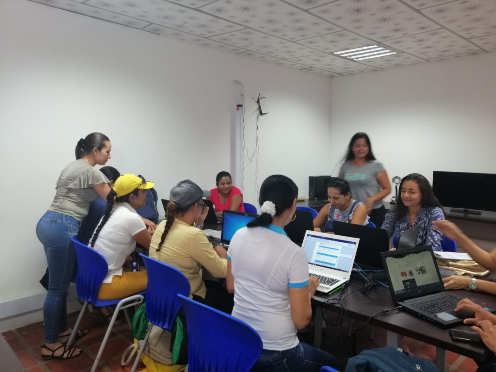
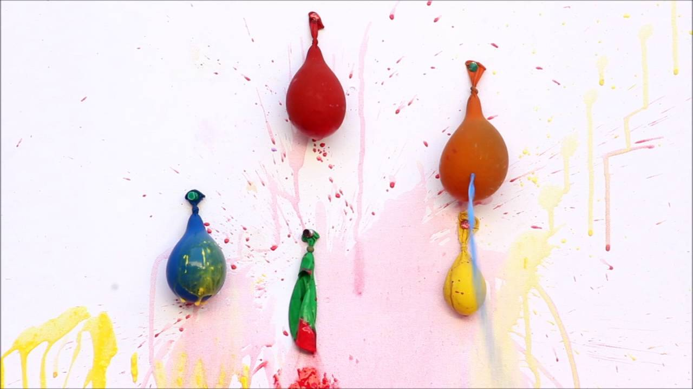

Observar las rondas y los juegos de tradición oral permite constatar cómo la literatura, la música, la acción dramática, la coreografía y el movimiento se conjugan. Desde este punto de vista, las experiencias artísticas artes plásticas, literatura, música, expresión dramática y corporal no pueden verse como compartimientos separados en la primera infancia, sino como las formas de habitar el mundo propias de estas edades, y como los lenguajes de los que se valen los niños y las niñas para expresarse de muchas formas, para conocer el mundo y descifrarse.
Actividad pintura con globos
Para realizar esta actividad lo que debemos hacer es inflar un globo con poco aire de modo que quede pequeño el globo inflado, luego le entregamos el globo al niño con una hoja de pintura esparcida, le pedimos al niño que de golpes pequeños en la hoja y así esparcir la pintura. Creando una mezcla de colores y potenciando el sentido visual y manual